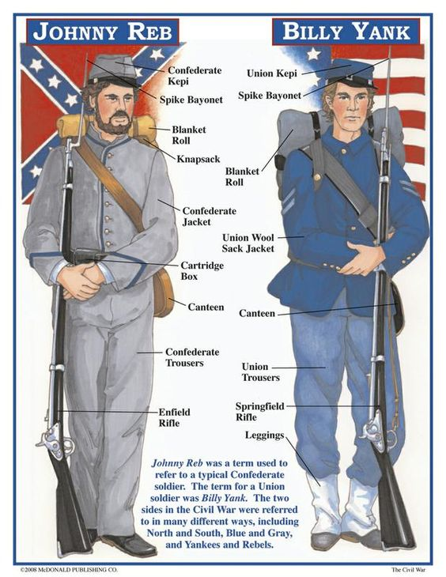

Welcome to the Union site! Here, you may find different resources, for example battle plans, and training about different things, and of how to keep clean
To find some of our resources, please scroll below.
Our Anaconda Plan
The Anaconda Plan is a obscure plan that is not well known by the Confederacy, but, we are planning to create a naval and military blockade, to attempt to squeeze the south until they fall due to supply shortages.
We are planning to execute the Anaconda plan soon, but by the way the Confederacy was acting about it, we are sure that they have their own plans in mind.
When the Anaconda plan does execute, we do expect our military blockade to siege the south.
How to stay healthy during the war
To stay healthy during wartime, it is important that you take precautions, or you will die from illness.
One way you can be healthy is staying away, at least 3 feet away from other people who are sick, and make sure you have sufficient clothing at all times, or you will get sick, either from hypothermia, or from stroke.
Make sure you do not drink contaminated water, and only eat food raw if you know it is safe. If you are not sure, ask a general.
What to expect when fighting in the war
When fighting in the war, you have to expect the worst, especially when you are in a a battle, such as Antietam.
You will also get dirty during the war, so it is dire that you at least try to stay as clean as possible, especially when you are in those long 3-day battle situations.
Here is what the uniforms will look like. This is used for identification purposes, such as identifying our men and the Confederate men.
Our and Confederate uniforms.
Major battles we have fought and won in the
Our major battles we have fought in and won include:
Battle of Antietam
Battle of Gettysburg
Battle of Shiloh
Battle of Vicksburg
Some wepons you may see in the war
In the picture above about uniforms, you saw one famous gun, the Bayonet, but there are lots of other weapons that people use in the war.
Not only do people use guns, but some use swords and knives to fight in the war.
Below are some of the wepons you may see in the war.
M1842 US Musket (.69 calibers).
M1861 US Rifled Musket (.58 calibers).
M1853 Enfield Rifled Musket (.577 calibers).
Spencer Carbine
Sharpe Carbine
Colt Revolver
Remington Revolver